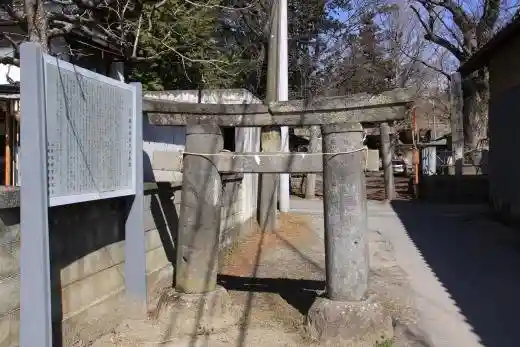
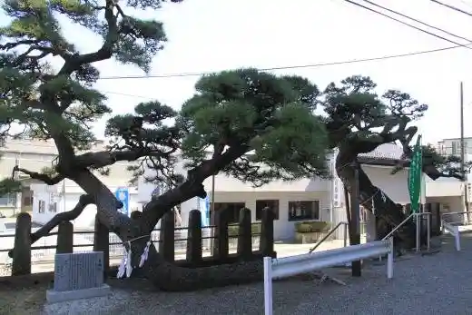
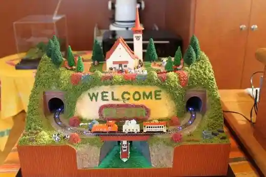
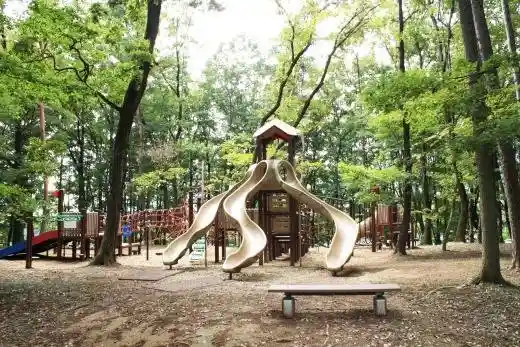

Umi Se Farm
Nirasaki, Yamanashi · 0551-22-5058 · Official / source link
Katte Shrine no Ishidorii
Nirasaki, Yamanashi · 0551-22-1991 · Official / source link

Wakamiya Hachiman Shrine
Nirasaki, Yamanashi · 0551-22-1991 · Official / source link

Mokei Shitsu FLOR
Nirasaki, Yamanashi · 0551-22-1214 · Official / source link

Nirasaki Chuo Park
Nirasaki, Yamanashi · 0551-22-1111 · Official / source link

Sosen In
Nirasaki, Yamanashi · 0551-22-1111 · Official / source link
Takeda Hachiman Shrine
Nirasaki, Yamanashi · 0551-22-1111 · Official / source link
Shinpu Castle Ruins
Nirasaki, Yamanashi · 0551-22-1111 · Official / source link
Kannon Yama Park
Nirasaki, Yamanashi · 0551-22-1991 · Official / source link
Wani Tsuka no Sakura
Nirasaki, Yamanashi · 0551-22-1991 · Official / source link
Nirasaki Chiiki Johohasshin Center
Nirasaki, Yamanashi · 0551-23-6886 · Official / source link
Shinpu Togenkyo
Nirasaki, Yamanashi · 0551-22-1991 · Official / source link
Roadside Station Nirasaki
Nirasaki, Yamanashi · 0551-25-5021 · Official / source link
Okada Budo Sono
Nirasaki, Yamanashi · 090-8584-2841 · Official / source link
Hotaru Village (Yanagihara Shrine)
Nirasaki, Yamanashi · 0551-22-1991 · Official / source link
Nirasaki Dai Village Art Museum
Nirasaki, Yamanashi · 0551-23-7775 · Official / source link
Supotsu Land Yamanashi
Nirasaki, Yamanashi · 0551-22-8226 · Official / source link
Izutsuya Shoyu
Nirasaki, Yamanashi · 0551-22-2255 · Official / source link
Amari Santo Ya Lookout
Nirasaki, Yamanashi · 0551-22-1991 · Official / source link
Gingatetsudo Tembo Park
Nirasaki, Yamanashi · 0551-22-1111 · Official / source link
Aoki Kosen Sho Takekawa Campground
Nirasaki, Yamanashi · 0422-51-2313 · Official / source link
Nirasaki Sawara Ike Campground
Nirasaki, Yamanashi · 0551-22-1111 · Official / source link
Amari Yama
Nirasaki, Yamanashi · 0551-22-1991 · Official / source link
Nomi Sono Kasai Wainarii
Nirasaki, Yamanashi · 0551-25-5107 · Official / source link
Kamanashi Kawa River Park
Nirasaki, Yamanashi · 0551-22-1111 · Official / source link
Shiokawa Fureai Park
Nirasaki, Yamanashi · 0551-22-1111 · Official / source link
Ganjo Tera
Nirasaki, Yamanashi · 0551-22-3118 · Official / source link
Ko Kurayama Sancho Ipponmatsu Fukin Byupointo
Nirasaki, Yamanashi · 0551-22-1111 · Official / source link
Mori Togei Kurabu
Nirasaki, Yamanashi · 0551-22-8350 · Official / source link